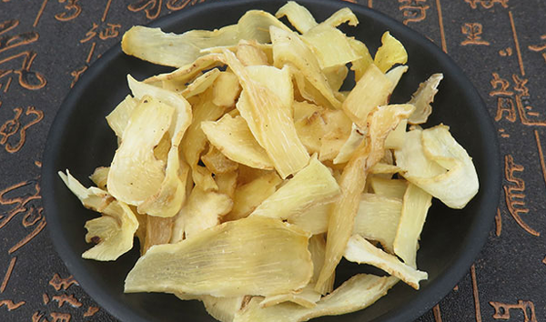
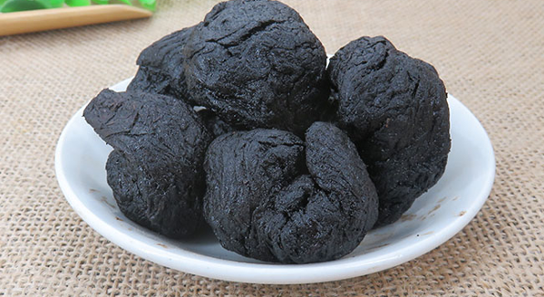
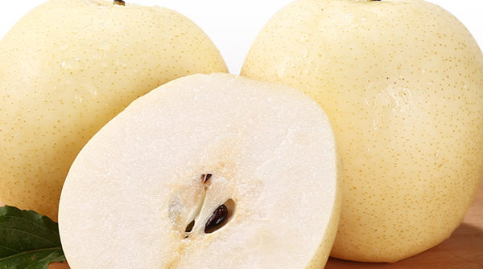
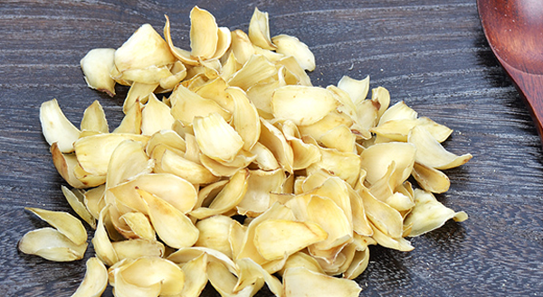
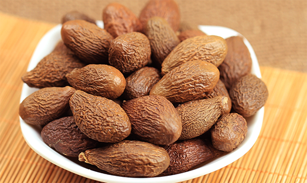
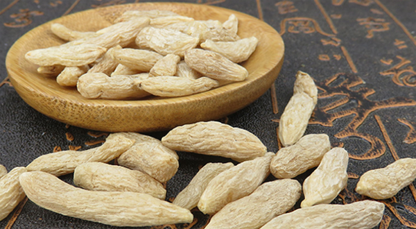

肺燥会导致咳嗽，秋冬季天气干燥，很多朋友都有偶尔特殊，干咳无痰的现象，这就是因为肺燥导致的肺燥咳嗽。秋冬季肺燥最大的特点就是早上起来时会感觉嗓子干痛，喝水之后有好转。秋冬季养身的原则就是润肺，润肺的药主要是滋阴润肺的。
1、玉竹

适应人群：适用于经常口渴咽痛的患者使用。
药用部位：根茎部干燥后入药使用，玉竹生长分布的地方很广，是秋季的常用药材之一。
功效及食用方法：养阴，润肺，生津，止咳。治疗因为燥邪犯肺，津液流失导致的干咳。食用方法主要是秋季泡茶饮用。
2、黄精

适应人群：适用于咳嗽，咯血的患者使用。
药用部位：根茎部干燥后入药使用，黄精不仅可以润肺还能治疗消渴等阴虚病症。
功效及食用方法：养阴益气，润肺，健脾治疗因为阴虚火旺导致肺燥引起的咳嗽。主要的食用方法是秋天泡茶饮用。
3、梨

适应人群：梨适合秋季养身食用。
药用部位：果实可以直接入药，有着润肺的功效。
功效及食用方法：生津，润燥，化痰，清热，治疗因为秋冬肺燥导致的咳嗽咳痰。食用方法有，可以直接食用，还可以煮水饮用，是秋冬养肺最好的方法。
4、百合

适应人群：适用肺燥引起的咳嗽的问题。
药用部位：百合干燥后使用入药，性味寒，走心经，肺经。
功效及食用方法：养阴、润肺，清心，安神，治疗因为肺燥导致的咳嗽。和梨一样都是药食同源的药材，平时可以食用。
5、胖大海

适应人群：适用于嗓子痛不能说话，咳嗽的人。
药用部位：成熟的种子干燥后使用。
功效及食用方法：清热、润肺、开嗓利咽喉。治疗因为肺热肺燥导致的咽喉肿痛咳嗽。食用方法是泡水饮用，以及和其他药物配伍治疗。
6、麦冬

适应人群：适用于秋冬养身，干咳，治疗阴虚导致的肺燥引起的口渴咳嗽。
药用部位：根茎部干燥后入药使用，有着苦、寒的性味。
功效及食用方法：养阴，生津，润肺，止咳，是秋季常用的润肺药材之一。可以和菊花枸杞子一起泡茶饮用。
结语：通过上文的介绍，相信大家都了解了关于润肺的中药，这些都是秋季润肺常用的药材，希望大家能多多使用滋养身体。